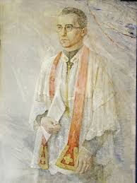

Su vida

Alfredo Parte Sáiz nació el 2 de junio de 1899 en Cilleruelo de Bricia, Burgos, España. Formó parte de una familia numerosa y desde joven sintió vocación religiosa.
Ingresó en las Escuelas Pías, una orden religiosa dedicada especialmente a la educación cristiana de los jóvenes. Fue ordenado sacerdote en 1928 y dedicó su vida a la fe y a la enseñanza.
Línea de tiempo
| Año | Hecho importante |
|---|---|
| 1899 | Nacimiento en Burgos, España. |
| 1915 | Tomó el hábito escolapio. |
| 1922 | Desarrolló su misión en Villacarriedo. |
| 1928 | Fue ordenado sacerdote. |
| 1936 | Murió durante la persecución religiosa en España. |
| 1995 | Fue beatificado por el papa Juan Pablo II. |